Die Python-Programmiersprache benötigst Du, um Spiele, Apps und andere coole Dinge zu bauen. Dann brauchst Du Git. Git hilft dir, Deinen Programmier-Code sicher aufzubewahren und mit anderen zu teilen. Ausserdem benötigst Du Thonny. Thonny ist wie ein Werkzeugkasten, in dem Du Python und Git einfach ausprobieren kannst.
Thonny installieren
Thonny ist eine Software, bei der man mit der Programmiersprache Python Computerprogramme erstellen kann. Python ist in Thonny bereits integriert. Je nachdem, welches Betriebssystem Dein Computer hat, geht die Installation etwas anders. Keine Sorge, ich erkläre Dir alles.
Bei Windows kannst Du ein Installationsprogramm herunterladen und dieses starten. Das installiert Dir Thonny auf Deinem Windows Computer.
1. Starte einen Browser. Gehe auf https://thonny.org/
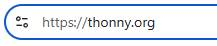
2. Fahre mit der Maus auf den Schriftzug „Windows“ und klicke auf den Link wie in dem folgenden Bild.
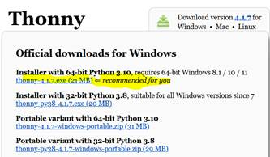
3. Klicke auf den Link und das Installationsprogramm für Thonny wird heruntergeladen. Ein Installationsprogramm ist eine Software, die eine andere Software auf Deinem Computer einrichtet, so dass Du sie benutzen kannst.
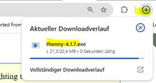
4. Wenn Du das Installationsprogramm vollständig heruntergeladen hast, kannst Du es mit einem Doppelklick starten.
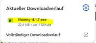
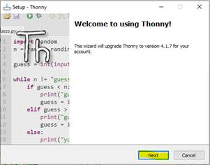
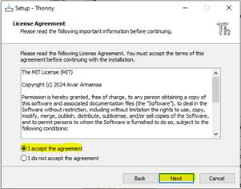
7. Dann wirst Du gefragt, ob Du ein Desktop-Icon für Thonny erstellen willst, setze das Häkchen und klicke auf „Next“
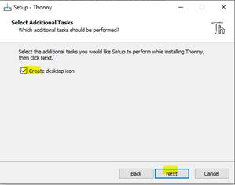
8. Dann wird Dir nochmals angezeigt, wo Thonny installiert wird. Klicke auf „Install“, um die Installation zu starten.
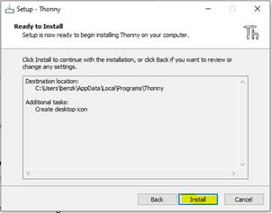
9. Nun startet die Installation mit einem Balken, der nach und nach aufgefüllt wird. Warte, bis alles voll ist.
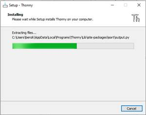
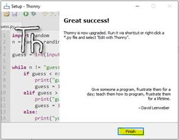
Beim Mac ist die Sache so ähnlich wie bei Windows. Du kannst ein Installationsprogramm herunterladen und dieses starten. Das installiert Dir Thonny auf Deinem Mac.
1. Gehe auf https://thonny.org/
2. Fahre mit der Maus auf den Schriftzug „Mac“ und klicke auf den Link wie in dem folgenden Bild.
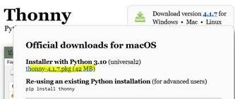
3. Nun wird die Datei heruntergeladen.
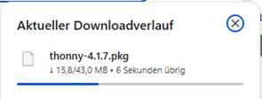
4. Öffne die heruntergeladene Datei und folge den Anweisungen auf dem Bildschirm. Die Installation erfolgt genau gleich wie bei Windows.
Bei Linux ist das etwas anders als bei Mac und Windows. In Linux musst Du zuerst ein Computerprogramm öffnen: das Terminal. Ein Terminal ist ein Programm mit dem man dem Computer Textbefehle geben kann. Unter Linux sieht es in etwa so aus:
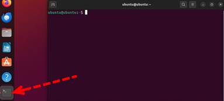
1. Hast Du das Terminal geöffnet, gibst Du folgende Befehl ein:
(ACHTUNG: Das $-Zeichen und den Leerschlag vor „bash“ kannst Du ignorieren)
$ bash <(wget -O - https://thonny.org/installer-for-linux)
2. Danach wird das Installer-Programm für Thonny heruntergeladen und dann ausgeführt.
Glückwunsch! Thonny ist installiert. Du bist bereit, um mit dem Programmieren loszulegen. Naja, zumindest fast bereit. Um Deine Daten analysieren zu können und die Beispielprogramme aus diesem Buch zu nutzen, brauchst Du nämlich noch ein Computerprogramm, dass Dir die Daten und Beispielprogramme herunterlädt. Dieses Computerprogramm heisst „Git“. Mit „Git“ kann man Dateien, in denen Programmiercode gespeichert ist, von einer Website herunterladen (und auch auf Websites hochladen). Git wird von Software-Entwickler*innen genutzt, um Programmiercode miteinander auszutauschen. Sie können dann den Programmiercode gemeinsam anschauen, ihn verbessern und weiterentwickeln.
Du benötigst Git, um die Codebeispiele aus diesem Buch runterladen zu können. Je nachdem, ob Du Windows, Mac oder Linux auf Deinem Computer hast, ist das Vorgehen, um Git zu installieren, ein anderes. Keine Sorge: Ich erkläre Dir die Installation für alle Systeme.
Die Installation von Git auf Windows erfolgt bequem durch ein Installationsprogramm.
1. Besuche die Website git-scm.com.
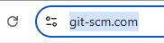
2. Klicke dort zunächst auf „Downloads“.
3. Es öffnet sich die Download-Seite. Klicke dann auf „Windows“.
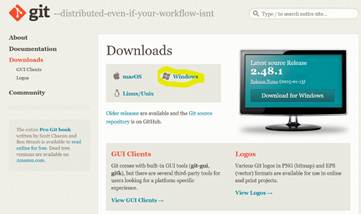
4. Klicke nun auf den obersten Link.
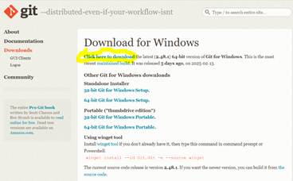
5. Wieder wird ein Installationsprogramm heruntergeladen.
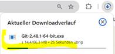
6. Sobald der Download fertig ist, klicke auf den Link.
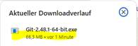
7. Anschließend wird das Installationsprogramm gestartet. Auch hier kriegst Du als erstes mal die Lizenzvereinbarung zu sehen, d Klicke auf „Install“.
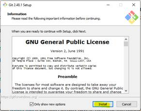
8. Nun werden die Daten installiert.
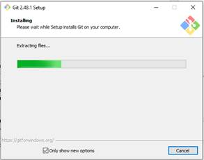
9. Warte, bis alles installiert ist und klicke auf „Finish“.
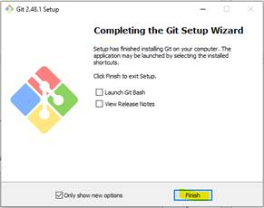
Beim Mac ist die Sache anders als bei Windows. Hier musst Du ebenfalls ein sog. „Terminal” öffnen und ein Programm namens „brew” installieren. Dabei handelt es sich um einen „Paket-Manager”. Das ist eine Software, mit der man andere Software installieren kann.
Manchmal ist brew bereits auf Deinen Mac installiert. Um das zu testen, öffne ein Terminal.
1. Um das Terminal zu öffnen, musst Du auf Deinem Mac die „Cmd“-Taste drücken und gedrückt halten und dann auf die Leertaste drücken (Cmd + Leertaste).
2. Es öffnet sich ein Suchfenster. Du wirst nun vom Computer aufgefordert, zu sagen, welches Programm Du gerne öffnen würdest. Gib „Terminal“ ein und drücke dann die Taste „Enter“.
3. Es erscheint ein schwarzes Symbol, auf das Du klicken kannst.
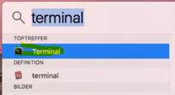
Teste nun, ob brew bereits installiert ist. Gib folgendes ins Terminal ein:
(ACHTUNG: Das führende ‘$’-Zeichen und den Leerschlag vor ‘/bin…’ musst Du weglassen. Das ‘$’-Zeichen habe ich nur in den Text eingefügt, damit man sieht, dass eine neue Zeile im Terminal beginnt.)
$ brew --version
Wenn nun eine Version von Homebrew angezeigt wird, wie in untenstehendem Bild, hast Du brew bereits installiert. Du kannst dann zum Abschnitt „git mit brew installieren“ vorspringen.
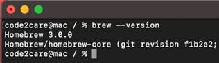
brew installieren
Das Computerprogramm brew wird über das Terminal installiert.
1. Öffne ein Terminal, falls Du es nicht bereits geöffnet hast. Gib im Terminal folgenden Befehl ein und drücke Enter:
$ /bin/bash -c „$(curl -fsSL https://raw.githubusercontent.com/Homebrew/install/HEAD/install.sh)“
2. Dieser Befehl lädt das Installationsprogramm für Homebrew herunter und führt es aus.
3. Es kann sein, dass Du von Deinem Mac aufgefordert wirst, Dein Passwort einzugeben. Dann gibst Du einfach Dein Passwort ein (Du siehst keine Zeichen beim Tippen, das ist normal). Schliesslich drückst Du Enter.
4. Nun wird brew installiert. Sobald die Installation durchgelaufen ist, folge den Anweisungen auf dem Bildschirm, falls Du noch Umgebungsvariablen setzen musst.
5. Falls brew nicht automatisch in den PATH aufgenommen wurde, kannst Du es manuell hinzufügen. Tippe dazu folgendes ins Terminal:
$ echo 'eval „$(/opt/homebrew/bin/brew shellenv)“' >> ~/.zprofile
$ eval „$(/opt/homebrew/bin/brew shellenv)“
Nun sollte brew installiert sein. Gib folgenden Befehl in das Terminal ein, um zu prüfen, ob Homebrew erfolgreich installiert wurde:
$ brew --version
Falls die Versionsnummer angezeigt wird, ist die Installation erfolgreich abgeschlossen. 🎉
git mit brew installieren
Nun bist Du bereit, Git zu installieren. Mit brew geht es ganz einfach.
1. Öffne das Terminal, wenn Du es noch nicht geöffnet hast. Tippe folgendes ins Terminal ein:
$ brew install git
Schon wird git installiert.
Bei Linux ist es so ähnlich wie beim Mac. Allerdings brauchst Du kein brew für die Installation. Der Paket-Manager heißt dort je nach Linux-Distribution (Ubuntu, Debian, Fedora etc.) einfach etwas anders. Der Vorteil gegenüber Mac: der Paket-Manager ist auf Linux in der Regel schon installiert.
Öffne ein Terminal und gib folgenden Befehl ein:
sudo apt-get install git
Github ist eine Website, auf der Programmierer ihren Code speichern und veröffentlichen können. Alle Übungen und Daten zu diesem Buch findest Du auf:
https://github.com/kbenz1/juri-chicago.git
Um den Code für dieses Buch von Github herunterzuladen, musst Du folgende Schritte tätigen.
1. Öffne den „Explorer“, wenn Du auf Windows bist. Hast Du einen Mac, öffnest Du den „Finder“. In den meisten Linux Distributionen gibt es einen „File Explorer“.
2. Dann erstellst Du in einem Ordner Deiner Wahl ein Verzeichnis, wo Du den Github-Code hineinladen willst. In diesem Beispiel heisst das Verzeichnis „Juri-Apps“ und es befindet sich im Ordner „Dokumente“. Navigiere dann in dieses Verzeichnis.
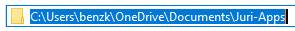
3. Klicke mit der rechten Maustaste auf eine leere Fläche und wähle „Open Git Bash here“ (Windows) oder öffne das Terminal direkt (Mac/Linux).
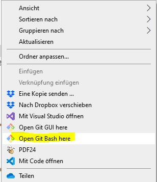
4. Gib anschließend folgenden Befehl ein, um die Übungen dieses Buches herunterzuladen:
$ git clone https://github.com/kbenz1/juri-chicago.git